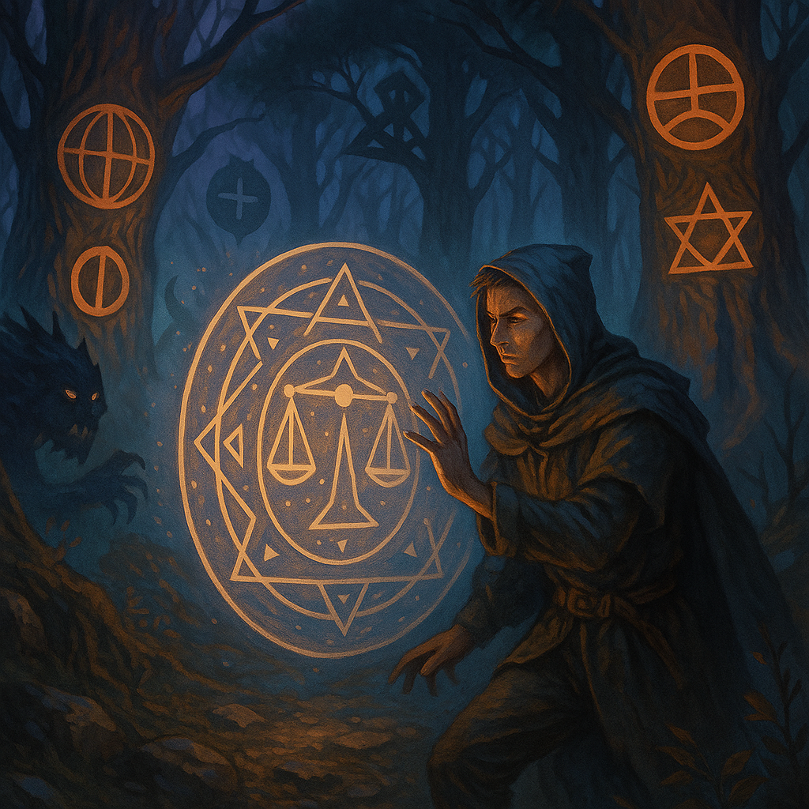
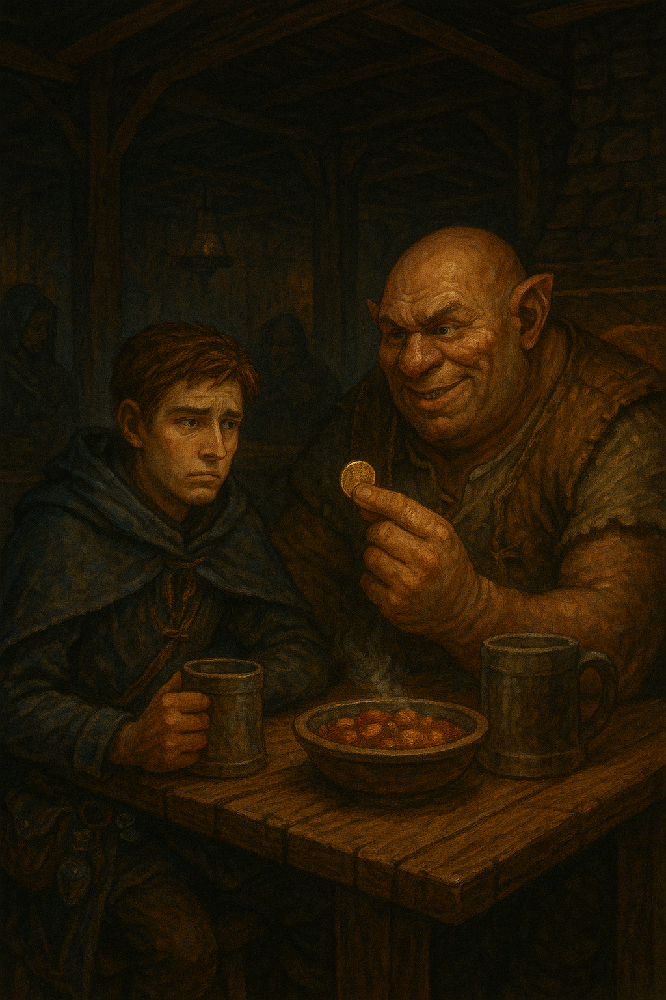
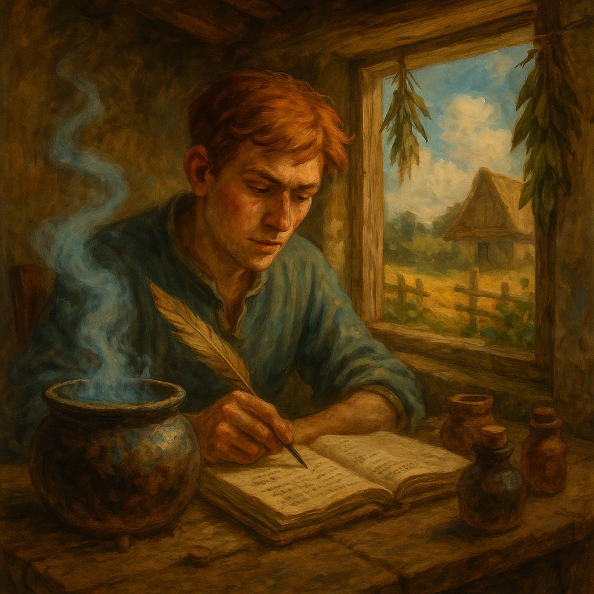

Я виходив у темний ліс на світанку, коли роса ще блищала на листі, а туман тихо звивався між стовбурами високих ялин. Моя мета була проста — знайти нічну фіалку, рідкісну траву для експериментів зі своїми зіллями. Я планував доповнити нею своє нове зілля бадьорості, перш ніж повернутися в свою маленьку хату на околиці села.
По дорозі я милувався, як сонячні промені пробивалися крізь хмарний туман і густі хвойні гілки, освітлюючи руді мухомори і килими м’ятлику. Я затамував подих, коли побачив першу квітку фіалки з пелюстками ніби зі срібла, але щойно я схилився, щоб її зірвати, почув гуркіт — і з кущів з різних сторін вистрибнула зграя лісових вовків.
Вони оточили мене в тісному кругу, мене досі лякають ці гострі зуби, що блищали, мов леза. У мене змерзли руки, тримаючи срібні пелсютки. Класичні захисні закляття не підходили — “Щит Крижана Скеля” розсипався одразу, як злісні вовки наближали до них свої морди, а “Вітер Відходу” хоч й дав тваринам відволіктись, але ставав марним проти зграї.
У цей момент я згадав п'ятий параграф зі свого підручнику по магії другого ступеня. У ньому йшлося, що потрібне закляття не лише захищає, а відображає енергію противника назад. Тремтячими губами я пробурмотів закляття (яке саме я не скажу, бо планую відкрити на цьому сайті власний курс).
Я гордо встав, підняв руки — і коли найближчий вовк кинувся вперед, його тіло зупинилося, ніби удар потрапив у невидиму стіну, яка в момент зіштовхнення на мить засвітилась і погасла, а потім його відкинуло в ті ж кусти, звідки сам вовк і вийшов. Решта тварин, злякані невідомим феноменом, затремтіли й понеслися назад після марних спроб нападу та осліплюючого світла невидимого щита.
Я вдихнув свіжого повітря й відчув, як серце б’ється так, ніби зараз вистрибне. Підвівся, підібрав фіалку, обережно склав її в торбинку й, не озираючись, кинувся до своєї хати. Дорогою серце ще не заспокоїлося, а кожен звук лісу здавався гучнішим.
Дійшовши додому, я зачинив двері на всі замки, розвісив фіалки на пергаментні стовбурки і приніс усі свої інструменти. Сів за стіл, запалив свічку, відкинув усі сум’яття — і з усмішкою зрозумів: справжня магія починається там, де страх стає твоїм найбільшим викликом.
Коли ти тільки починаєш шлях чаклуна, тебе більше приваблюють блискучі артефакти, ніж побутові дрібниці. Саме тому я, після збору перших інгредієнтів і пари вдалих продажів на ярмарку, вирішив «відзначити успіх» у найближчій таверні. Це була дерев’яна будівля зі стінами, що скрипіли навіть від легкого вітерця, а повітря там пахло димом, пивом і тваринною змовою.
Я сів у кутку — так, щоб видно було двері, бо вчився бути обережним. Замовив собі миску гарячого рагу й кухоль чогось темного, що називалось "Гномський квас", хоча гномів у нашій місцевості не було вже років тридцять.
І ось тут з'явився він — огр. Величезний, з бородавкою, що жила окремим життям, у латаному жилеті й з підозріло м’якими руками для того, хто нібито «вивертає дерева з корінням». Він присів поряд без запрошення.
— Ти, хлопче, зілля вариш? — проричав він, дивлячись на мій пояс, де теліпався свіжий мішечок із порошком з жар-пелюстки.
— Ем… так, — відповів я. Хоч і не хотів говорити, язик сам видав правду. Мене розпирало від гордості.
— Я маю тобі ділову пропозицію, — сказав він, витягаючи з кишені щось блискуче. — Ця монета — справжнє щастя. Вона завжди повертається до власника. Я тобі її продаю за одну пляшечку зілля сили.
Мене, чесно кажучи, не так цікавила монета, як сам факт, що огр щось хотів у мене купити. Це був перший клієнт, хоч і з роду тих, хто може розчавити тебе випадково, якщо почне плескати по спині. Тож я витягнув свою баночку зілля, обережно простягнув йому… і отримав монету.
— Тепер подивись уважно! — гукнув він, підкидаючи монету вгору.
Вона звісно ж упала. І залишилася лежати на підлозі.
Я ще трохи посидів, спостерігаючи, як монета вперто не повертається до огра. Тоді зрозумів: чарів тут не було, лише звичайна хитрість і моя наївність.
З того часу я завів правило: ніколи не торгуй магією з тим, у кого пальці товстіші за твою голову. А ще — завжди носи із собою зілля перевірки правди, навіть якщо йдеш просто випити квасу.
У нас у селі магія — не дивина, але й не престиж. Кожен щось вміє: хто дрова сушить без вогню, хто курей від лиса оберігає змовами. Але ніхто не вникає, чому те чи інше працює. Просто звикли — і все. От і я звик, поки не стало нудно.
Я почав думати: а що, як підійти до цього серйозно? Не просто варити зілля на похмілля, а вивчати, як складники взаємодіють. Чому у заклятті замороження важливий саме другий склад слова, і чому після дощу всі мої обереги працюють навпаки. Ніхто не пояснює — бо нікому не цікаво. А мені цікаво.
Поки інші жаліються на погоду, я веду записи: температура, фази місяця, якісь дивні збіги. Ще трохи — і куплю собі справжній посох, і буду писати власні матеріали, бо я вірю, що магія може бути наукою. Я хочу зібрати власний довідник: чіткий, з формулами, схемами, без цієї всієї “зілля на око й на удачу”.
Поки що я в селі. Магію використовую помірно, але планую більше. В ідеалі було би покинути село, навчитися працювати зі складними закляттями і зіллями. Може, колись навіть поїхати до міста — подивитися, як у “серйозних” чаклунів влаштовано.